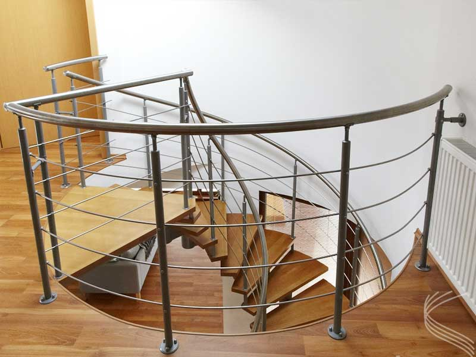
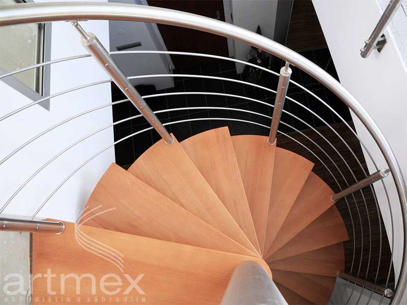
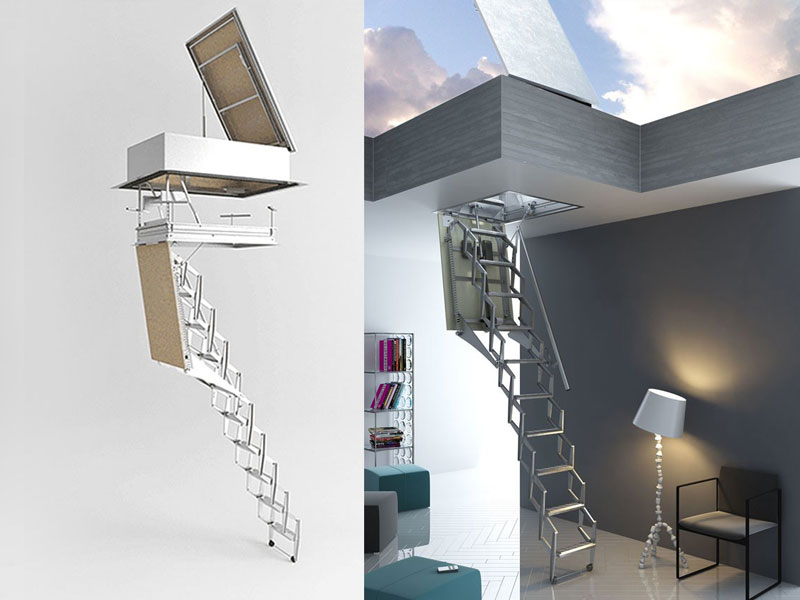
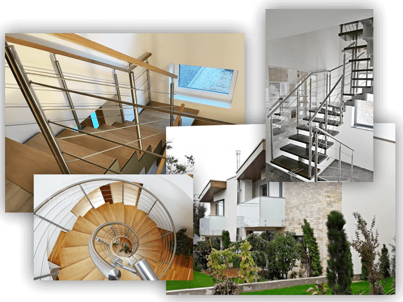

Zábradlia
Zhotovili sme ich stovky po celom Slovensku. Antikorové zábradlia, sklo, lanková alebo zvislá výplň, bočné či horné kotvenie.
Navrhneme, vyrobíme a namontujeme na mieru, za cenu, ktorú očakávate. Návrh a zameranie máte zadarmo.
Kontaktujte násČo vyrábameNaša ponuka
Drevené, kovové aj atypické schody, zábradlia z nehrdzavejúcej ocele a motorové podkrovné schody.

Zhotovili sme ich stovky po celom Slovensku. Antikorové zábradlia, sklo, lanková alebo zvislá výplň, bočné či horné kotvenie.

Vretenové, modulové, drevené, kovové aj atypické schody pre rodinné domy a firemné priestory. Vaša predstava je naším návodom.

Motorové schody „MSG automatic“ otvoria prístup na galériu alebo do podkrovia. Takmer neviditeľné, a pritom s dizajnom.
O nás
Zatiaľ čo firmy vznikajú a zanikajú, s nami máte istotu, že o Vaše schody sa postaráme aj o niekoľko rokov.

Realizácie
Schody a zábradlia riešia aj komplikované priestory: mezonetové byty, podkrovia, novostavby i dodatočné prepojenie podlaží.
Ako to prebieha
Prečo hľadať viac dodávateľov, keď môžete mať jedného spoľahlivého.
Napíšete nám, čo potrebujete.
Zadarmo, na mieru Vášmu priestoru.
Vlastná výroba schodov a zábradlí.
Namontujeme, nemusíte nič riešiť.
Kontakt
ARTMEX, s.r.o.
Gogoľova 3939/16
036 01 Martin
Ivan Meško, zakladateľ spoločnosti